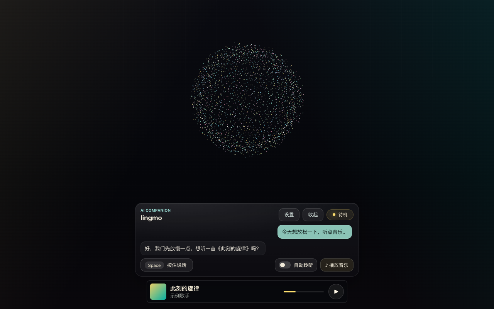
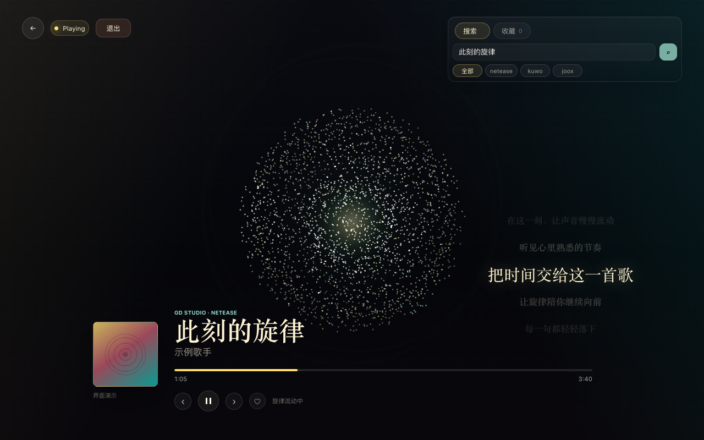

不只是听见。
还要接得住。
Seamo AI 把一次语音交互拆成清晰、可见的过程：从你开口，到文字出现、AI 回应，再到音乐接续。每一步都让人知道发生了什么。
开口说
自动倾听，或按住 Space 主动说话。
看见理解
语音实时转成文字，识别过程清晰可见。
获得回应
AI 回答逐步呈现，随后以语音播放。
继续体验
当你想听音乐，一句话即可进入播放。
让想法，
不必停在输入框前。
想问一个问题，直接说出来。Seamo AI 显示识别中的文字，也让 AI 的回答逐步出现；完成后的回答可以直接听见。
两种开口方式
自动倾听适合自然对话；按住 Space 说话，让你随时掌控输入时机。
过程始终可见
实时转写、对话消息与状态反馈，让语音交流不再像黑盒。
文字与声音接力
AI 回答逐步生成；完整回答随后转换成语音，阅读或聆听都方便。

说一句想听的，
把此刻交给音乐。
音乐是对话的自然延伸。通过语音点歌，或在音乐界面主动搜索；从找歌、播放到歌词与收藏，都在同一个桌面体验里完成。

识别点歌意图，将对话自然带入音乐。
支持多音源搜索、歌曲收藏和播放控制。
同步歌词与随音频变化的粒子视觉，带来更沉浸的播放感受。
它有能力，
也有自己的表达。
Seamo AI 不把 AI 藏在一个对话框里。声音、界面状态与音乐视觉共同组成这款桌面产品的个性。
可配置助手的人设提示与多个音色选项，选择更适合自己的回应方式。
粒子球与界面状态随倾听、思考、回应和音乐播放变化。
收起后保留快捷语音操作；对话时，迷你播放器让音乐状态随手可及。
从声音到回应，
每一环都有作用。
不是把能力堆在一起，而是让语音理解、AI 生成、声音合成和音乐视觉沿着一条交互路径协同工作。
捕捉开口的瞬间
语音活动检测与录音预缓冲，帮助保留一句话的开头。
把声音变成可见的文字
流式语音识别持续返回转写内容，让用户跟得上识别过程。
让回答逐步到达
大模型流式生成文字，完整回答再合成为语音播放。
把音乐变成画面
音频频谱驱动粒子状态，配合多音源检索与歌词呈现。
现在，先把交流做好。
当前版本聚焦语音对话与音乐。未来将继续探索个人记忆、信息获取、提醒和任务协助，让这位桌面助手更懂你的日常。
以上方向仍在规划中，不属于当前版本能力。